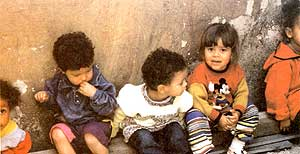

COURTESY SARAH PUTNAM; ABOVE: ANNA BLYTH LAPP?
These giggling 3- and 4-year-olds in Belo Horizonte, Brazil, get four nutritious meals a day in an innovative city program that treats food as a right of citizenship. Children in poor communities are given tasty food enriched with ground eggshell, manioc leaves and other nutritious ingredients that would otherwise be thrown away.